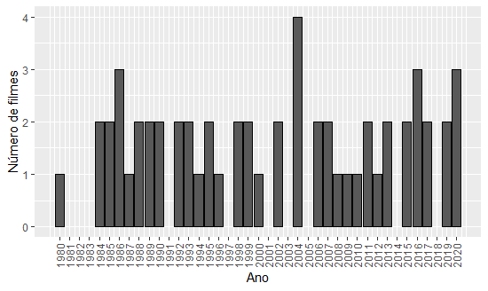

No Episódio 606 do Podcast RapaduraCast, os participantes elegem o melhor filme de Tom Hanks através de discussão e opiniões. A questão levantada neste post é se a escolha do Rapadura coincide com as avaliações do IMDb. Vamos analisar os filmes do Tom Hanks usando R.
Análise de Dados
R
Data Wrangling
Estatística
Autor
Agatha S. Rodrigues
Data de Publicação
8 de abril de 2021
No Episódio 606 do Podcast RapaduraCast, os participantes discutem e escolhem o melhor filme do Tom Hanks. Na conversa, eles opinam sobre os filmes que o Tom Hanks atua até chegarem em um consenso e elegerem o melhor filme. Mas a questão é: a escolha do Rapadura é a mesma que das avaliações do Internet Movie Database (IMDb)? Para responder a essa pergunta, vamos analisar os filmes que Tom Hanks participa como ator (em qualquer nível) com relação às informações do IMDb com o R.
Primeiramente, vamos carregar os pacotes do R que utilizaremos.
Código
library(dplyr) # transformar dadoslibrary(readr) # ler dadoslibrary(magrittr) # para operadoreslibrary(stringr) # manipular textolibrary(purrr) # criar funcionaislibrary(questionr) # fazer tabela de frequência legallibrary(forcats) # lidar com variáveis categóricaslibrary(tidyr) # tratar os dadoslibrary(jsonlite) # tratar os arquivos no formato JSONlibrary(glue) # colar textolibrary(plotly) # fazer gráficos interativoslibrary(ggplot2) # fazer gráficos
Para acessar aos dados do IMDb, vamos seguir alguns passos que Athos recomenda no post, ao obter uma API KEY no site OMDB.
Coloquei a chave obtida no arquivo .Renviron, ao inserir: omdb_chave = minha chave. Dessa forma, só preciso chamar no código Sys.getenv('omdb_chave').
Código
readRenviron(".Renviron")Sys.getenv('omdb_chave')
No vetor abaixo estão as IMDb IDs dos filmes que queremos analisar.
Podemos observar que há 58 filmes. Também consideramos a função que o Athos apresenta para extrair as informações do ID como argumento.
Código
#função para pegar as informações do filme identificado pelo argumento imdbidpega_info_imdb <-function(imdbid) {glue("http://www.omdbapi.com/?apikey={Sys.getenv('omdb_chave')}&i=tt{imdbid}") %>%fromJSON() %>%as_tibble()}
Agora vamos aplicar a função aos ids dos filmes do Tom Hanks e arrumar a base de dados.
Código
#aplicar a função 'pega_info_imdb' aos idsdados1 <-map(filmes_ids, pega_info_imdb)#tirar os dados da listaai <-data.frame()for (i in1:58) { oi <- dados1[[i]] ai <-bind_rows(ai, oi)}str(ai)
“Metro-Goldwyn-Mayer” “Metro-Goldwyn-Mayer” “Aspect Ratio Film” …
$Website
chr
“N/A” “N/A” “N/A” “N/A” …
$Response
chr
“True” “True” “True” “True” …
Veja que todas as variáveis foram lidas como character. A seguir são arrumadas as variáveis quantitativas que vamos analisar: ‘imdbRating_num’ é a nota do filme, ‘ano’ é o ano do filme e ‘num_votos’ é o número de votos recebidos.
Código
#arrumar as variáveis quntitativas que estão como textodados <- ai %>%mutate(imdbRating_num = imdbRating %>%parse_number(), ano = Year %>%parse_number(), num_votos = imdbVotes %>%parse_number() )
Vamos ver as variáveis contidas na base de dados:
Código
names(dados)
[1]
“Title”
“Year”
[3]
“Rated”
“Released”
[5]
“Runtime”
“Genre”
[7]
“Director”
“Writer”
[9]
“Actors”
“Plot”
[11]
“Language”
“Country”
[13]
“Awards”
“Poster”
[15]
“Ratings”
“Metascore”
[17]
“imdbRating”
“imdbVotes”
[19]
“imdbID”
“Type”
[21]
“DVD”
“BoxOffice”
[23]
“Production”
“Website”
[25]
“Response”
“imdbRating_num”
[27]
“ano”
“num_votos”
Código
dim(dados)
[1]
166
28
Note que há 166 observações na base. Isso acontece porque para 54 deles há avaliações da Metacritic e da Rotten Tomatoes, além do IMDb.
Código
dados %>%group_by(Ratings[,1]) %>%summarise(n =n())
A tibble: 3 x 2
Ratings[, 1]
n
1
Internet Movie Database
58
2
Metacritic
54
3
Rotten Tomatoes
54
Vamos selecionar só as avaliações de IMDb:
Código
#só avaliações do IMDbdados_imdb <- dados %>%filter(Ratings[,1] =='Internet Movie Database')
Na coluna “Genre” consta os gêneros do filme em questão.
Código
#gênero do filmehead(dados_imdb$Genre)
[1]
“Horror, Thriller”
[2]
“Comedy”
[3]
“Comedy, Fantasy, Romance”
[4]
“Comedy, Thriller”
[5]
“Adventure, Comedy”
[6]
“Drama, Romance, War”
Como todos os gêneros estão na mesma coluna, precisamos usar um código para verificar se o gênero de interesse está contido na coluna. São os gêneros de interesse aqui: ação, aventura. criminal, drama, mistério, suspense, histórico, biográfico, fantasia, comédia, animação, sci-fi, romance e musical.
Dentre os gêneros considerados, aquele que o Tom Hanks mais atuou foi em drama, seguido de perto por comédia.
A variável “Awards” indica os prêmios e/ou indicações dos filmes.
Código
#prêmios e indicações do filmefreq(dados_imdb$Awards)
n
1 nomination.
4
1 win & 1 nomination.
1
1 win & 2 nominations.
1
1 win & 5 nominations.
2
1 win.
1
2 nominations.
1
2 wins & 3 nominations.
1
3 nominations.
1
3 wins & 1 nomination.
1
4 wins & 1 nomination.
1
6 wins & 4 nominations.
1
7 wins & 8 nominations.
1
N/A
8
Nominated for 1 Golden Globe. Another 15 wins & 78 nominations.
1
Nominated for 1 Golden Globe. Another 5 wins & 33 nominations.
1
.
.
.
Vamos então criar a variável de premiação, com as categorias: nenhum, oscar, BAFTA/Golden Globe, nomeado ao Oscar/BAFTA/Golden Globe, outros prêmios e nomeado a outros prêmios.
Código
#criando a variável de premiaçãodados_imdb <- dados_imdb %>%mutate(premiacao =case_when(str_detect(Awards, "N/A") |is.na(Awards) ~"nenhum",str_detect(Awards, "Won.*Oscar") ~"oscar",str_detect(Awards, "Won.*(BAFTA|Golden Globe)") ~"BAFTA/Golden Globe",str_detect(Awards, "Nominated") ~"nomeado ao Oscar/BAFTA/Golden Globe",str_detect(Awards, "win") ~"outros prêmios",str_detect(Awards, "nomination") ~"nomeado a outros prêmios",TRUE~"outro" ) )#tabela de frequência para premiacaofreq(dados_imdb$premiacao, total =TRUE)
n
%
val%
nenhum
8
13.8
13.8
nomeado a outros prêmios
6
10.3
10.3
nomeado ao Oscar/BAFTA/Golden Globe
26
44.8
44.8
oscar
8
13.8
13.8
outros prêmios
10
17.2
17.2
Total
58
100.0
100.0
Veja que as categorias são ordenadas por ordem alfabética. Vamos reordenar as categorias: oscar, outros prêmios, nomeado ao Oscar/BAFTA/Golden Globe, nomeado a outros prêmios, nenhum.
Código
#arrumar a ordem das categorias usando a função lvls_reorder do forcatsdados_imdb <- dados_imdb %>%mutate(premiacao =as.factor(premiacao), premiacao =lvls_reorder(dados_imdb$premiacao, c(4, 5, 3, 2, 1)) )#tabela de frequência para premiacaofreq(dados_imdb$premiacao, total =TRUE)
n
%
val%
oscar
8
13.8
13.8
outros prêmios
10
17.2
17.2
nomeado ao Oscar/BAFTA/Golden Globe
26
44.8
44.8
nomeado a outros prêmios
6
10.3
10.3
nenhum
8
13.8
13.8
Total
58
100.0
100.0
Uma curiosidade seria ver quais os filmes ganharam o Oscar.
Código
#identificar os filmes vencedores do Oscardados_imdb %>%filter(premiacao =="oscar") %>%select(Title, Year, Genre)
Title
Year
Genre
1
Philadelphia
1993
Drama
2
Forrest Gump
1994
Drama, Romance
3
Apollo 13
1995
Adventure, Drama, History
4
Saving Private Ryan
1998
Drama, War
5
Road to Perdition
2002
Crime, Drama, Thriller
6
Toy Story 3
2010
Animation, Adventure, Comedy, Family, Fantasy
7
Bridge of Spies
2015
Drama, History, Thriller
8
Toy Story 4
2019
Animation, Adventure, Comedy, Family, Fantasy
Em “Philadelphia”, de 1993, Hanks ganhou o oscar de melhor ator, enquanto a música “Streets of Philadelphia”, de Bruce Springsteen, ganhou o oscar de melhor canção original. “Forrest Gump” ganhou o oscar de melhor filme, melhor diretor, melhor ator para Tom Hanks, melhor roteiro adaptado, melhores efeitos visuais e melhor edição. O filme “Apollo 13” (de 1995) ganhou o oscar de melhor edição e melhor som. O filme “O Resgate do Soldado Ryan” (Saving Private Ryan) ganhou o oscar de melhor diretor, melhor fotografia, melhor edição, melhor edição de som e melhor mixagem de som.
O filme “Estrada para Perdição” (Road to Perdition) ganhou o oscar de melhor fotografia. “Toy Story 3” ganhou o oscar de melhor filme de animação e melhor canção original e o “Toy Story 4” ganhou o oscar de melhor animação. O filme “Ponte dos Espiões” (Bridge of Spies), de 2015, levou o oscar de melhor ator coadjuvante.
Agora chegou a hora de ver as medidas descritivas das notas dos filmes.
Código
# descritivas das notasdados_imdb %>%summarise(min =min(imdbRating_num),mediana =median(imdbRating_num), media =mean(imdbRating_num), max =max(imdbRating_num),dp =sd(imdbRating_num) )
min
mediana
media
max
dp
5.1
6.9
6.862
8.8
0.905
Podemos observar que a nota média é de 6.87 e que o filme com maior avaliação teve nota 8.8 e o filme com a menor obteve 5.1. Mais adiante vamos identificar esses filmes.
Há uma variável de duração do filme (“Runtime”).
Código
head(dados_imdb$Runtime)
[1]
“94 min”
“105 min”
“111 min”
“92 min”
“107 min”
“98 min”
Note que há texto no campo da variável. Vamos usar a função extract_numeric do pacote tidyr para retornar apenas o número:
Código
# criando a variável de duração do filmedados_imdb <- dados_imdb %>%mutate(duracao = Runtime %>%extract_numeric() )head(dados_imdb$duracao)
[1]
94
105
111
92
107
98
Código
# descritivas da duracaodados_imdb %>%summarise(min =min(duracao),mediana =median(duracao), media =mean(duracao), max =max(duracao),dp =sd(duracao) )
min
mediana
media
max
dp
81
108.5
114.67
189
22.27
Vamos considerar um filme longo se este tem mais de 2 horas e vamos criar a variável indicadora de filme longo:
dados_imdb %>%group_by(ano) %>%count() %>%ungroup() %>%ggplot(aes(x = ano, y = n)) +geom_col(color ='black') +scale_x_continuous(breaks =1980:2020) +labs(x ="Ano", y ="Número de filmes") +theme(axis.text.x =element_text(angle =90, vjust =0.5, hjust=1))

Em média, Tom Hanks atua em 1.87 filmes por ano. Pelo gráfico acima, o ano de 2004 foi o ano que mais saiu filme com atuação do Hanks (4 filmes). Além disso, nos anos de 81, 82, 83, 91, 97, 2001, 2003, 2005, 2014 e 2018 não foram lançados filmes do ator.
Ao considerar a variável de maior interesse desse post, a nota do IMDb do filme, vamos fazer um gráfico de dispersão dessa variável com o número de votos, com as cores dos pontos identificando a premiação recebida pelo filme. Faremos esse gráfico interativo por meio do pacote Plotly para que o leitor consiga identificar o filme que cada ponto representa e também fazer zoom in e zoom out se assim desejar.
Código
f <-list(size =16,color ="black")x <-list(title ="Número de votos",titlefont = f)y <-list(title ="Nota do IMDb",titlefont = f)fig <-plot_ly(dados_imdb, x =~num_votos, y =~imdbRating_num, text =~Title, type ='scatter', mode ='markers', color =~premiacao, colors ='Paired',sizes =c(10, 50),marker =list(opacity =0.5, sizemode ='diameter'))fig <- fig %>%layout(showlegend =FALSE )fig <- fig %>%layout(xaxis = x, yaxis = y)fig
Nesse momento vamos responder à pergunta que motivou esse post: dentre os filmes que Tom Hanks atua, qual apresenta a maior nota no IMDb?
Código
# filme com maior nota no IMDbdados_imdb %>%filter(imdbRating_num ==max(imdbRating_num)) %>%select(Title, ano, Runtime, Genre, imdbRating_num)
Title
ano
Runtime
Genre
imdbRating_num
1
Forrest Gump
1994
142min
Drama, Romance
8.8
Pela saída acima e o gráfico anterior, descobrimos que é “Forrest Gump”.
E o filme com a menor nota:
Código
# filme com menor nota no IMDbdados_imdb %>%filter(imdbRating_num ==min(imdbRating_num)) %>%select(Title, ano, Runtime, Genre, imdbRating_num)
Title
ano
Runtime
Genre
imdbRating_num
1
He Knows You’re Alone
1980
94min
Horror, Thriller
5.1
O filme com a menor nota é “Trilha dos Corpos”” (He Knows You’re Alone) de 1980, o primeiro trabalho de Tom Hanks no cinema. Já o filme com maior número de votantes é:
Código
# filme com maior número de votos no IMDbdados_imdb %>%filter(num_votos ==max(num_votos)) %>%select(Title, ano, Runtime, Genre, imdbRating_num, num_votos)
Title
ano
Runtime
Genre
imdbRating_num
num_votos
1
Forrest Gump
1994
142min
Drama, Romance
8.8
1826575
E o número com o menor número de votos é:
Código
# filme com menor número de votos no IMDbdados_imdb %>%filter(num_votos ==min(num_votos)) %>%select(Title, ano, Runtime, Genre, imdbRating_num, num_votos)
Title
ano
Runtime
Genre
imdbRating_num
num_votos
1
Every Time We Say Goodbye
1986
98min
Drama, Romance, War
5.9
2221
Já o filme com menor engajamento é “É Preciso Dizer Adeus” (Every Time We Say Goodbye), de 1986.
“Forrest Gump” é o filme com maior número de votos e também o filme com maior nota no IMDb do Tom Hanks. Esse é também o filme vencedor na votação do RapaduraCast e é também um dos meus filmes favoritos. =)
Nesse post exploramos os dados do IMDb com o R para analisar alguns números dos filmes que Tom Hanks atua. Espero que ele tenha motivado você a usar o R para responder curiosidades de seu interesse.